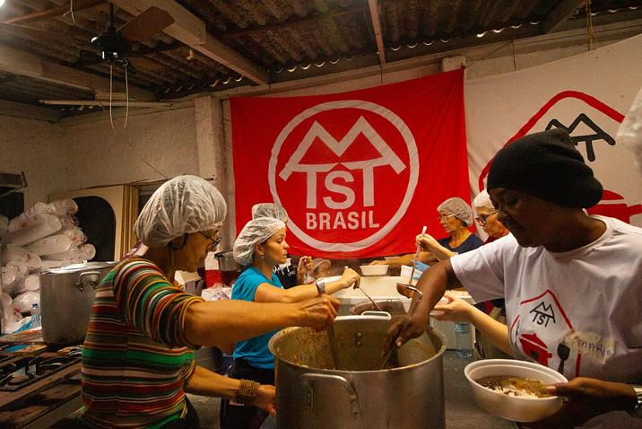

A influência dos agentes sociais nas políticas públicas de EPT no Brasil: interesses e “consensos”
O campo qualificação é complexo e apresenta vertentes diferenciadas, sendo as principais aquelas vinculadas à Produção (e circulação) de mercadorias, ao Estado e à Educação. Estas duas últimas vertentes mediam as demandas da primeira, ou seja, a produção determina, em última instância, os processos educativos. Para atender o objetivo deste tópico, abordaremos apenas a Educação e o Estado (no aspecto normativo), ressaltando, entretanto, que uma análise mais totalizante necessariamente impõe análises detalhadas dos processos formativos e dos próprios processos de trabalho nas empresas e no mundo do trabalho em geral, e não apenas nos espaços escolares.
Os principais agentes sociais coletivos que atuam na educação com implicações diretas e indiretas na EPT no Brasil são o polo contra-hegemônico e o polo hegemônico. O primeiro é composto por entidades representativas de trabalhadores (centrais sindicais, movimentos de trabalhadores rurais, confederações de sindicatos de trabalhadores em Educação), movimentos estudantis, movimentos sociais (negro, feminista, juventudes etc.), entidades cientificas, entre outros.

Fonte: ComunicaRS (2024).
Por outro lado, o polo hegemônico é formado por entidades representativas do empresariado, fundações, institutos, “movimentos” de base empresarial e entidades especializadas (a exemplo dos Serviços Nacionais de Aprendizagem e a rede privada de EPT).
Estes polos se organizam nos territórios, seja no âmbito nacional, estadual ou municipal, e nos espaços de trabalho (fábrica, loja, escola etc.), com composições específicas e influências variadas, onde determinados agentes podem até não ter presença física, mas sua influência se materializa nas ações. Esses agentes sociais coletivos apresentam características e interesses diferenciados, mesmo estando no mesmo polo, e possuem:
- Estrutura de capital diferenciado, como exemplo, as entidades de base empresarial tendem a ter mais capital econômico, enquanto as entidades científicas apresentam mais capital cultural;
- Força e influência diferenciados, decorrentes do peso combinado dos diferentes tipos de capital;
- Intelectuais orgânicos que elaboram as concepções, posições e estratégias a serem adotadas;
- Mecanismos de divulgação das ideias e, ainda, ações de “defesa” de suas posições e de “ataque” a posições contrárias, vinculadas à violência simbólica;
- Representações públicas, tanto no Executivo como no Legislativo e Judiciário, que verbalizam e atuam na defesa de seus interesses.
Os Serviços Nacionais de Aprendizagem – SENAI, SENAC, SENAR e SENAT –, vinculados, respectivamente, às confederações patronais da indústria, do comércio, da agricultura e do transporte, possuem tradicionalmente o maior capital no campo, sendo responsáveis pela estruturação inicial e pela manutenção do polo hegemônico. Esses serviços (e seus correlatos serviços sociais) representam uma categoria à parte, sendo por vezes denominada de paraestatal.
Criadas a partir dos anos 1940, as paraestatais são instituições públicas, com legislação específica e financiadas por recursos da seguridade social, porém geridas de forma privada, pelas Confederações e Federações patronais. A partir dos anos 1990, essas confederações realizaram um movimento de defesa, tentando ocultar ao máximo o caráter público, passando a considerar a confederação, os Serviços de Aprendizagem e outras estruturas (voltadas para estágio ou para inovação) como parte de um “sistema” privado. A partir de 2005, começaram a chamar-se coletivamente de “Sistema S”, expressão que não existe juridicamente, mas que possui grande peso simbólico, pois cria uma ilusão de unidade que não existe para a defesa dos interesses privados.
Entretanto, as fundações e institutos vinculados ao setor bancário e a ramos específicos da indústria e serviços se tornaram importantes na expansão dessa hegemonia, em particular nos processos de disputa das normativas e do uso dos recursos públicos para financiamento privado.
E qual é a situação das estruturas públicas, ou seja, dos órgãos específicos da EPT, incluindo as redes pública, estadual e federal? Estes são, justamente, os espaços em disputa, onde as batalhas são travadas. O foco principal da ação dos agentes do polo hegemônicos são as estruturas superiores (ministérios, secretarias, departamentos, entre outras), uma vez que estas possuem poder normativo, embora avancem cada vez mais para as unidades escolares. Enquanto isso, o polo não hegemônico se faz presente tanto nessas estruturas, com menor força, como na esfera acadêmico-científica, com maior força, mas principalmente nos movimentos sociais e nos espaços de trabalho, onde as contradições impulsionam os questionamentos e as resistências, sendo o local em que a tomada de posição e as ações individuais e coletivas têm mais influência na luta simbólica.
Deste modo, são encontrados espaços públicos onde o polo hegemônico impera (embora sempre haja algum nível de resistência) e outros com predominância de concepções contra-hegemônicas.
Como exercício para auxiliar você na elaboração de seu Memorial, responda as perguntas abaixo:
- Observe as instituições citadas a seguir e pesquise a história, atuação e os propósitos das delas e tente perceber, para além das declarações oficiais, os interesses em relação à Educação em geral e na EPT em particular;
- Identifique, entre as instituições citadas (e outras), as que você teve notícia de presença na sua unidade escolar. Qual o efeito de cada uma delas sobre a gestão e o trabalho técnico-pedagógico?
- E as instâncias superiores imediatas (reitoria ou secretaria estadual), com quais polos você identifica que elas se alinham? Há a presença dessas entidades citadas (ou outras)?
- O que você pode observar sobre a posição da maioria dos docentes, funcionários e estudantes em relação aos diversos interesses analisados?
.png)
.png)
.png)
.png)
.png)
.png)
Título: Principais agentes coletivos atuantes nas políticas públicas de EPT
Fonte: Schüler (2023a).
Elaboração: Prosa (2025e).